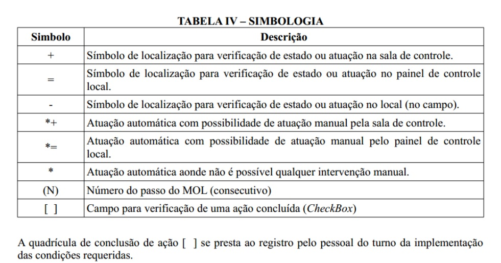

POG - Indica as linhas gerais de operação normal da planta, desde as condições ambientes até
levar o reator nuclear a produzir 100% de potência, passando pelo aquecimento, pressurização da
planta e pela partida de todos os equipamentos, retorno às condições ambientes (desligamento da
planta) e troca de combustível.
POS - Detalha a operação de equipamentos ou sistemas específicos. Pode ser iniciado por
indicação em qualquer outro tipo de procedimento ou quando o operador identificar a necessidade
de operar aquele sistema ou equipamento.
POA - Utilizado para operação da planta fora do estado estacionário/transitório normal previsto
no projeto, que não ameaça as barreiras de segurança contra a liberação de atividade para o meio
ambiente e provavelmente não causaria danos significativos a itens importantes para a segurança
nuclear
POE - Contém instruções para a equipe operacional implementar as medidas preventivas a fim de
gerenciar os acidentes. Os POE's, geralmente contém todas as medidas preventivas para os
acidentes básicos de projeto e para além dos acidentes básicos de projeto até o ponto de dano no
núcleo.
PRA - Identifica os alarmes existentes na planta, o local de indicação do alarme na sala de
controle, seus valores (setpoints) de alarme, possíveis causas, ações do operador para
interpretar e eliminar o alarme, bem como apresenta seus documentos de referência
Operação Normal:
Conforme demanda do Chefe/Experimento, operador segue POG (e os POG chamam POS);
Qualquer anormalidade:
• A princípio, operador não sabe o que é, então pega o POE-0002/0003 de Monitoração de Função de
Segurança e Identificação de Acidente
• Se alguma Função de Segurança não está atendida (SPP não conseguiu desempenhar seu papel
satisfatoriamente), o POE-0002 aponta qual é o POE-01XX equivalente (com prioridade para qual
vai primeiro)
• Se as Funções de Segurança estão todas atendidas, o operador continua tentando Identificar o
Evento pelo POE-0003, eventualmente ele aponta qual POE-02XX ou qual POA o operador deve seguir
(sempre monitorando o POE-0002)
• Se for um evento não identificável, porém que o SPP tenha atuado, operador continua
monitorando o POE-0002 e tentando identificar o evento (eventualmente, com consulta externa ao
turno)
• Se for um evento não identificável, e que o SPP não atuou, o operador ataca os alarmes, um a
um, seguindo os PRA equivalentes.

Verbos de Verificação de Estado:
Fonte: “normal” (não-negrito)
Exemplo: Aberta / fechada, Ligada / desligada, Ajustada
Verbos de Atuação:
Fonte: “negrito”
Exemplo:
Abrir / fechar, Ligar / desligar, Ajustar
Conjunto de medidas a serem implementadas em caso de situação real ou potencial de emergência no CTMSP-CEA.
A ZPE do LABGENE abrange uma área delimitada por uma circunferência de 800m de raio, centrada no Prédio do Reator.
Evento Não Usual (ENU);
Alerta;
Emergência de Área;
Emergência Geral.
ENU - Configura um evento que, em função de uma
Condição Inicial (CI), após ter sido avaliada a situação, teve a constatação e/ou
previsão, de que não houve, e provavelmente não haverá, qualquer
vazamento ou liberação não programada de produtos radioativos para o meio
ambiente que indique a necessidade de medidas de proteção pertinentes a
ZPE do LABGENE
Alerta - Situação configurada no momento em que se verificar:
• Uma condição inicial que indique real ou provável degradação do nível de
segurança da instalação; ou
• A constatação e/ou previsão, após ter sido avaliada a condição da
instalação, de que houve ou provavelmente haverá vazamento ou
liberação não programada, na instalação, de material radioativo, porém
sem colocar em risco a saúde de pessoas no interior da instalação ou
além dos seus limites físicos.
Emergência de Área - Situação configurada no momento em que se verificar:
• Uma condição inicial que indique perda real do nível de segurança da
instalação; ou
• A constatação e/ou previsão, após ter sido avaliada a condição da
instalação, de que houve ou provavelmente haverá vazamento ou
liberação de material radioativo e/ou substâncias tóxicas, indicando a
necessidade de medidas imediatas de proteção além dos limites físicos
da instalação, porém ainda internas aos limites de propriedade do CEA;
Emergência Geral - Situação configurada no momento em que se verificar:
• Uma condição inicial que indique uma redução real e significativa do nível
de segurança da instalação; e
• A constatação ou previsão, após ter sido avaliada a condição da
instalação, de que houve ou provavelmente haverá vazamento ou
liberação de quantidades significativas de material radioativo e/ou
substâncias tóxicas, indicando a necessidade de medidas imediatas de
proteção além dos limites de propriedade do CEA
COGEPE;
CEL-LABGENE
CAAp
CEL-LABEGENE;
Equipes Locais.
Equipe de Brigada de Incêndio;
Equipe de Infraestrutura e Apoio;
Equipe de Engenharia de Segurança;
Equipe de Serviço.
• Avaliar as informações sobre a emergência no LABGENE;
• Comunicar ao COGEPE sobre emergência e sua classificação;
• Manter o COGEPE informado quanto à evolução da situação
de emergência.
• Equipe de Radioproteção;
• Equipe de Proteção Física do LABGENE;
• Equipe de Apoio Técnico;
• Equipe de Apoio de Emergência;
• Equipe de Combate a Incêndios
O acionamento do PPEL-LABGENE é caracterizado por três fases principais:
• Identificação da Condição Inicial (CI) causadora da emergência;
• Classificação inicial e Declaração da Emergência; e
• Mobilização dos grupos de emergência.
O CCLE fica no Centro de Suporte Técnico do LABGENE, situado no PANC, sendo necessariamente ativado a partir de uma situação de ALERTA, ou mesmo de um ENU, a critério do CEL-LABGENE.
O CSO é uma sala separada da SCR e do Centro de Suporte Técnico, onde as equipes de suporte operacional se reúnem para executar as ordens transmitidas pelo CCLE relacionadas à execução de reparos, manobras e outras atividades necessárias ao controle da situação de emergência
Aplicação de requisitos de segurança nuclear de forma proporcional às características das instalações, atividades ou das fontes radioativas e aos riscos associados.
• Área Vigiada;
• Área Protegida;
• Área Interna;
• Área Vital
• Camadas de defesa independentes e redundantes;
• Uso de controles de acesso;
• Barreiras físicas;
• Medidas de reposta a emergência;
• Aspectos administrativos;
• Medidas de detecção e retardo
• Sistema de Controle de Acesso;
• Sistema de CFTV de Proteção;
• Subsistema de Busca de Pessoas;
• Sistema de Alarme de Segurança Perimetral.
(F) O ciclo do combustível não inclui o processo de fabricação do combustível.
(V) Cultura de Segurança pode ser definida como a reunião de características e atitudes em
organizações e
indivíduos que estabelecem, como prioridade absoluta, que as questões de proteção e segurança
nuclear
recebam a total atenção pela sua importância.
(V) Um dos objetivos da proteção física é proteger o material nuclear ou outro material
radioativo
contra
roubo, furto ou qualquer outra forma de remoção não autorizada.
(F) O Sistema de Alarme de Segurança Perimetral permitirá a vigilância das cercas de proteção do
LABMAT.
Proteger o material contra roubos, contribuir para a recuperação do material nuclear roubado ou perdido, proteger a instalação de atos não autorizados, em especial sabotagem, contribuir para manter a integridade física do pessoal
Realizar vigilância e patrulhamento; monitorar, avaliar e reportar alarmes; escoltar indivíduos ou cargas; controlar acessos; atuar na resposta inicial adequada a incidentes de proteção física
A CNEN
Países estrangeiros ou grupos internacionais detentores da tecnologia nuclear;
Movimentos não-governamentais, em especial os contra tecnologias nucleares;
Movimentos extremistas nacionais
Vigiada: todo o CEA;
Protegida: LABGENE;
Vital: (SUB2), APR, PR, PC, PANC
Perguntar ao CC Wassano.